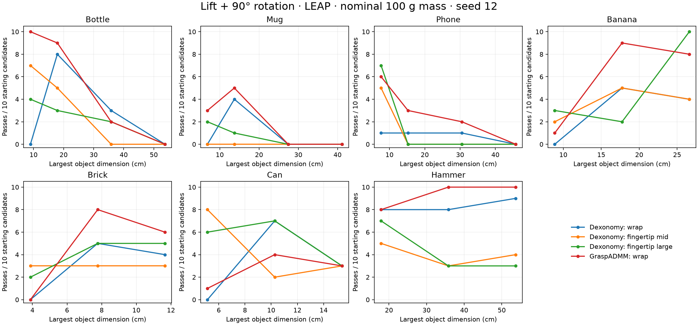

LEAP hand · native Dexonomy / GraspADMM local pilot. Lavender is the hand; peach is the object. The 3D models show measured simulation states after closing, not commanded finger positions. Open a 3D link to rotate/zoom one grasp at a time, or watch its animated physical replay below. The expanded interactive 3D explorer provides 178 recorded grasps across seven object types. Full-quality MP4 and GLB downloads are also available here. All examples are selected illustrations; the results table includes failed attempts.
Default vs adapted: plots + 3D Open interactive 3D explorer — 178 grasps Detailed report All condition counts (CSV) Object provenance and dimensions

Motion test: lift 10 cm, rotate 90°, and hold under object-weight loading. This is a controlled manipulation proxy, not evidence of real-world pouring or hammering. Handle-only contacts also do not prove strike clearance. Mesh simplifications, nominal 100 g object mass, controller compliance, small proposal budgets, and seed dependence are documented in the report.